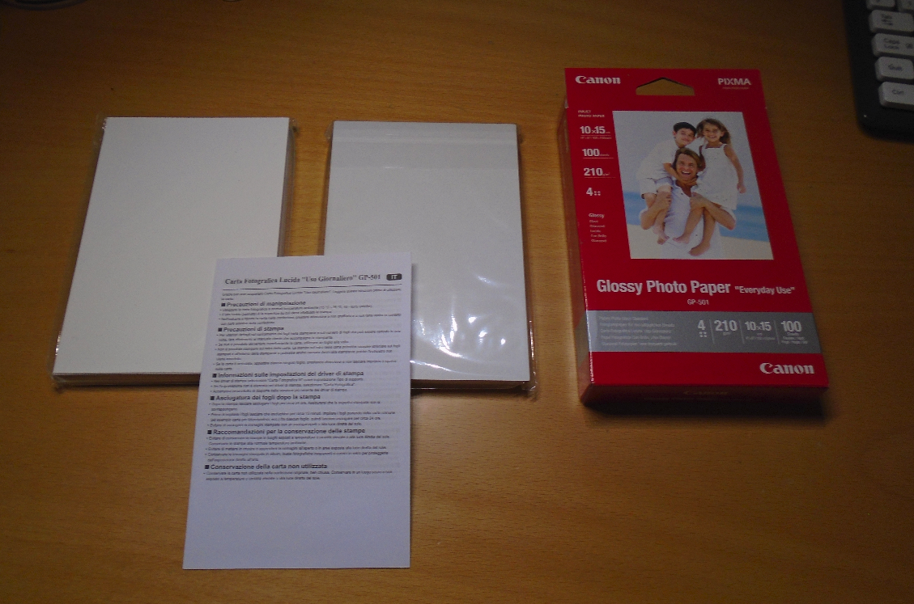
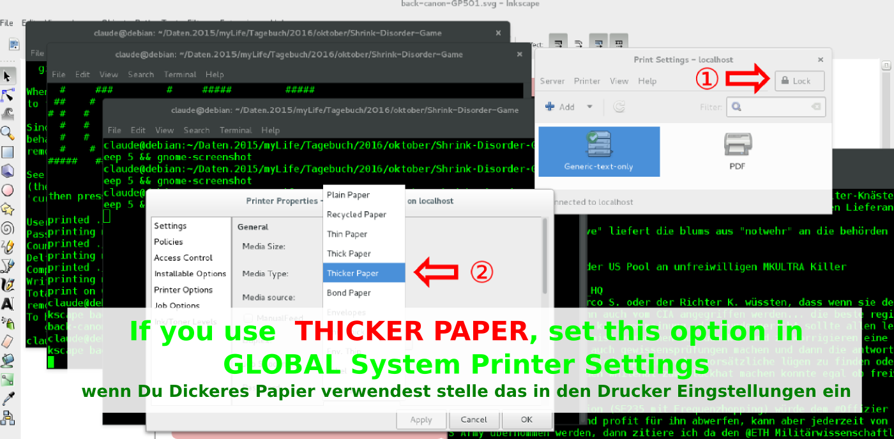
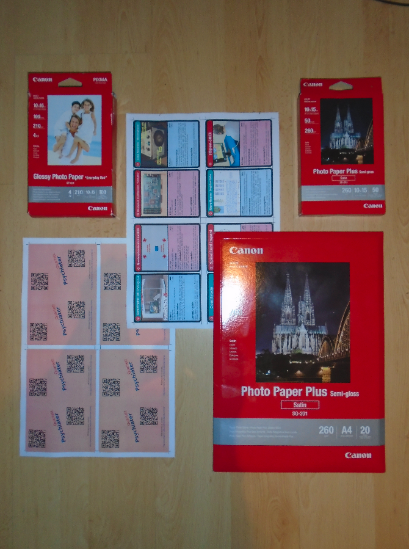
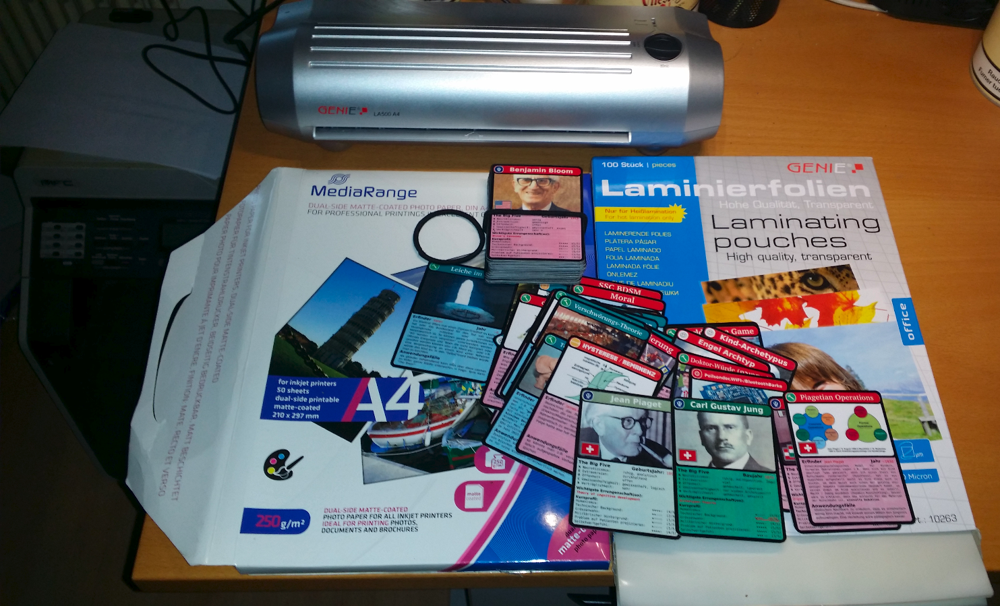
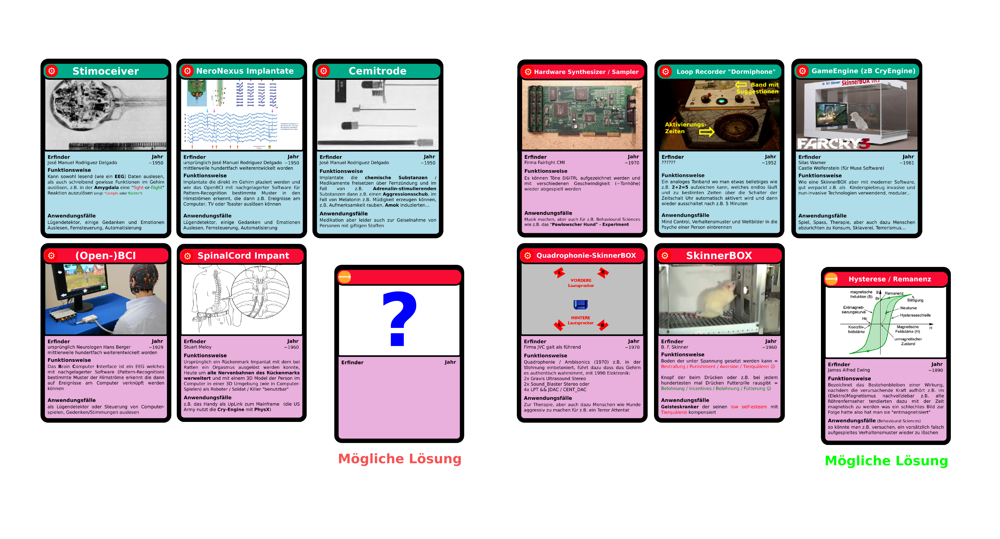

Psychiater Quartett / Psychiatrie Quartett / Shrink Disorder Game / Shrink Disorder Tarot

Disclamer: wie das tor OONIPROBE, THIS PROJECT involves "some" Risk
Use eg. The Onion Router or TAILS (will NOT help, if your Endpoint is already under Survaillance)
seit ein paar Tagen haben die jetzt damit begonnen, immer wenn ich die Karten ausschneide über das Spinal Cord Implantat Muskel-Tremor zu verursachen, das Amygdala Implantat (Fight or Flight) und das Medulla Oblangata Implantat (afaik Herz, Lungenfunktion, Atemnot, "Cyber"-Waterboarden) zu aktivieren, nerv... ähm Aversion... und ausserem soll verschleidert werden, dass beim ausschneiden der Muskulatur Apparat dazu gesteuert wird unschön zu schneiden, bei den Ecken fällt mir auf, dass es dafür Skills in der Anatomie der Muskulatur braucht, und darauf fängt das System automatisiert an eine ArrayList mit diesem Wissen über Medizin als Sündenblöcke einzublenden
* [ klassische | vernünftige | geisteskranke ] Psychiater
* Film Psychiater
* Archetypen
* sonstige häufige Archetypen in Filmen
* Technologie Karten
* Methoden Karten
* Algorithmen Karten
Für Windows und OSX gibt es zur Zeit noch keine Editor-Funktion: PDF - Variante für Windows und Apple OSX
verwendete Software:
Inkscape on GNU debian jessie/stretch Linux
z.B. auf nen USB >> 3.0 << Stick installieren am besten zuvor seine Windows Hard-Disk physikalisch ausziehen, dann macht man sein Windwos nicht aus Versehen kaputt
Ausdrucken geht am besten auf A6 Halbkarton Karten oder (250.0 g/m²) in einem Laser Drucker, in meinem Fall ein Brother MFC-9460cdn Papier unter 250.0 g/m² wird nicht so toll.
Letztere gibt die besseren Karten, aber allenfalls muss man das dem Laser-Drucker sagen damit die Heizschlaufe im Drucker wärmer macht sonst hält der Toner schlecht, oder FotoPapier A6 wäre ev. noch besser
Mit dem GP-501 von Canon geht es grundsätzlich, aber auf der Rückseite gibt es dann wieder das Problem, dass die Farbe schlecht hält, Packung a 100 Stück ca 12.-- also ist man für Fr 2.50 für 20 Karten dabei falls wenn man irgendwo Zugriff auf einen Laser Drucker und einen Debian Linux Computer hat...nehmen wir ein Solero Glace als Mass aller Dinge, sollte das im Budget jedes Kindes im Westen liegen
[UPDATE] für 10x teurer auf Canon SG-201 Foto-Papier wird noch ein bisschen toller, bis auf den Canon Aufdruck auf der Rückseite den man leider leicht sieht, aber wenn man z.B. die Rückseite mit ner anderen Farbe "customized" würds grundsätzlich gehen
   
Ganz wichtig, nach dem Drucken der Vorderseite muss man die Karten (zumindest in meinem Brother Drucker) wieder gerade biegen sonst verhäddern sich diese komplett, am besten zieht man dafür Latex oder dünne Stoff-Handschuhe sonst gibts Fingerabdrücke wo dann die Farbe nicht hält.
Beispiele: (Mitmachen erwünscht)
Rückseite ist im Ordner: back
Karten Kombinationen:

Wissenschftlich würde man hier von einem Morphologischen Kasten (achtung Google) sprechen.
Motivation dieses Projektes
Konzept entwickeln um Jugendlichen spielierisch zu zeigen, wie der Missbrauch in vielen Jobs oder auch wissenschaftlichen Disziplinen funktioniert. allenfalls für einige Karten noch ein FSK machen.
Den einstieg habe ich mit dem Buch http://www.buchtippse.de/314-missbrauch-von-hypnose.html gefunden.
Autismus
Grundsätzlich wäre es wohl möglich, einem Autisten mit PECS kompletten Schwachsinn aufzuspielen und irgendwelche pädo-sadistischen Eltern fänden das allenfalls sogar "ulkig", mit den Karten würde man dem missbrauchen Autisten allenfalls(?) auch beibringen können wie er "fernbedinet" wird, also so zu sagen das Refelction API
Artverwandte Themen
http://psychiatrie-leaks.ch/ http://suizid-app.ch/
Rechtliches
Möge dieses Repo unter Creative Commons by-nc-sa stehen + mögen die Lizenzbedingungen für den Fall dass damit Kinder oder Jüngere geschützt werden können auch umgangen werden...
https://creativecommons.org/licenses/by-nc-sa/4.0/
[ Marc Landolt jun. | Rombachtäli 13 | 5022 Rombach | Switzerland | +41 79 291 07 87 | www.marclandolt.ch ]